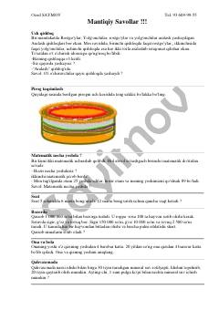

MSMantiqiy fikrlashni rivojlantiruvchi qiziqarli masalalar va matematik jumboqlar to'plami.
Ushbu kitob turli xil mantiqiy masalalar, matematik jumboqlar va qiziqarli topishmoqlarni o'z ichiga oladi. Kitob o'quvchilarning mantiqiy fikrlash qobiliyatini rivojlantirishga va nostandart vaziyatlarda yechim topishga o'rgatishga qaratilgan.